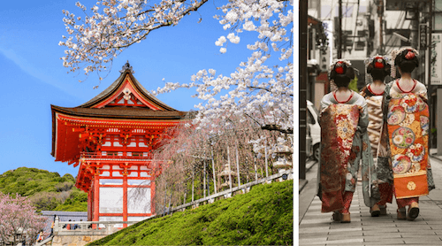

About Japan
Japan lies on the Pacific 'Ring of Fire', a chain of volcanoes which are responsible for the most dramatic volcanic outbreakes and tsunamis in the recent years. In Japan, there are more than 108 active volcanos. Japan records the most earthquakes in the world every year.
Here are some interesting Facts about Japan.
- Population: 126 million people live in Japan
- Capital: Tokyo, which is the biggest city in Japan
- Currency: 1 yen (JP¥) = 100 sen